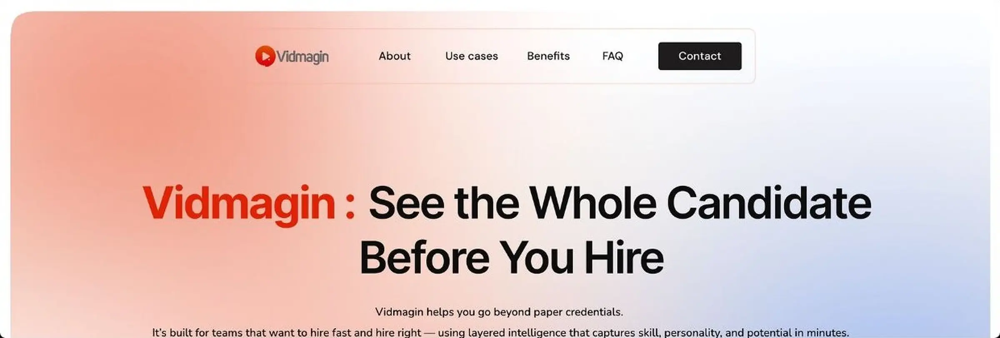

CASE STUDY / 01Vidmagin
A clearer story for an HR-tech product
PROBLEM
The company website needed a clearer product narrative, stronger hierarchy and a responsive system that could grow with the brand.
WHAT I DID
I reviewed the existing content, reorganised the page story, designed responsive interfaces and prepared structured developer handoff.
RESULT
A more focused website direction supported by a consistent visual language and 20+ related brand assets.